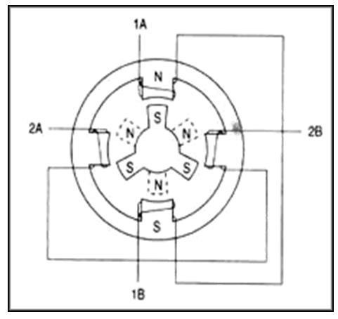
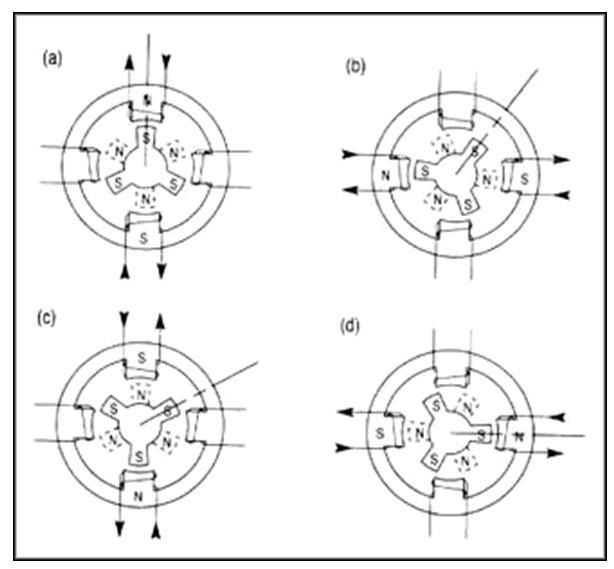

Prepare
Scenario, objectives, and safety
You are building a local motion-control node that receives commands from a LabVIEW HMI, sends those commands over serial to Arduino firmware, and uses a motor driver plus external power supply to move a stepper motor in controlled increments.


Learning goals
- Build and drive a stepper motor with Arduino and LabVIEW.
- Compile and upload Arduino firmware.
- Send and parse serial data between LabVIEW and Arduino.
- Explain the motor driver and external power supply.
WARNING: the stepper motor may heat up during operation. This can be normal, but use caution before touching the motor after it has been energized.